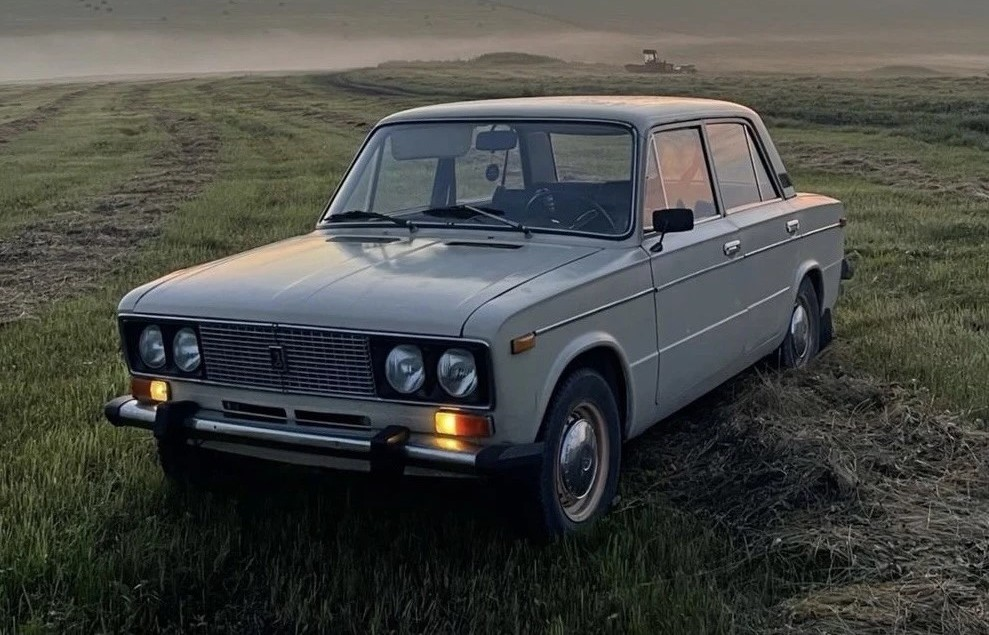

Классика · «копейка»
ВАЗ-2101
Первая массовая «Жигули». Простая, ремонтопригодная и до сих пор узнаваемая с первого взгляда на улице.
- Годы
- 1970–1988
- Кузов
- Седан, 4 двери
- Двигатель
- 1.2 л
- Мощность
- 64 л.с.
- КПП
- 4 МКПП
- Привод
- Задний
- Масса
- ~955 кг